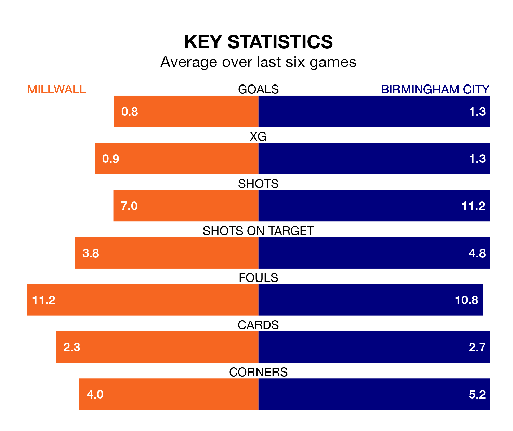

Birmingham City travel to Millwall on Saturday in the EFL Championship.
The visitors come into the game on the back of a draw in their last match, having tied with Hull City 1-1 away, with a goal from Lukas Jutkiewicz.
The Lions also drew their last match, 1-1 against Blackburn Rovers, with their goal scored by Michael Obafemi.
In the last 10 years, Millwall and Birmingham have played each other on 16 occasions. Millwall won six of them, Birmingham four, and they drew six times.
On average, the Lions scored 1.1 goals and the Blues 0.9 in those matches.
Their last meeting was on September 2, when they played out a 1-1 draw.
Birmingham are 20th in the table after 35 games, of which they have won 10 and drawn nine, earning 39 points.
Millwall are three places ahead of City in 17th, with 10 wins and 10 draws putting them on 40 points.
With 35 goals in 36 games so far this season, the Lions are scoring at below the league average rate with 1.0 goals per game. But they are conceding fewer than average too, letting in 48 goals at a rate of 1.3 per game.
The Blues are also below average scorers, with 1.2 goals per game, compared to a league average of 1.4. They have conceded 1.6 goals per game.
The home side are in mixed form in the EFL Championship, with two wins and a draw from their last six games.
And also with two wins and a draw over that period, the visitors' form is identical – they have both taken seven points from 18.
Saturday's match will be refereed by Darren Bond, who has taken charge of nine EFL Championship games so far this season, issuing one red card and booking 39 players. He has awarded four penalties.
The last Millwall game Bond refereed was a 1-1 home draw with Huddersfield Town on December 16. He is yet to oversee a match featuring Birmingham this season.
Updated: 09:34 (UTC), 08/03/24